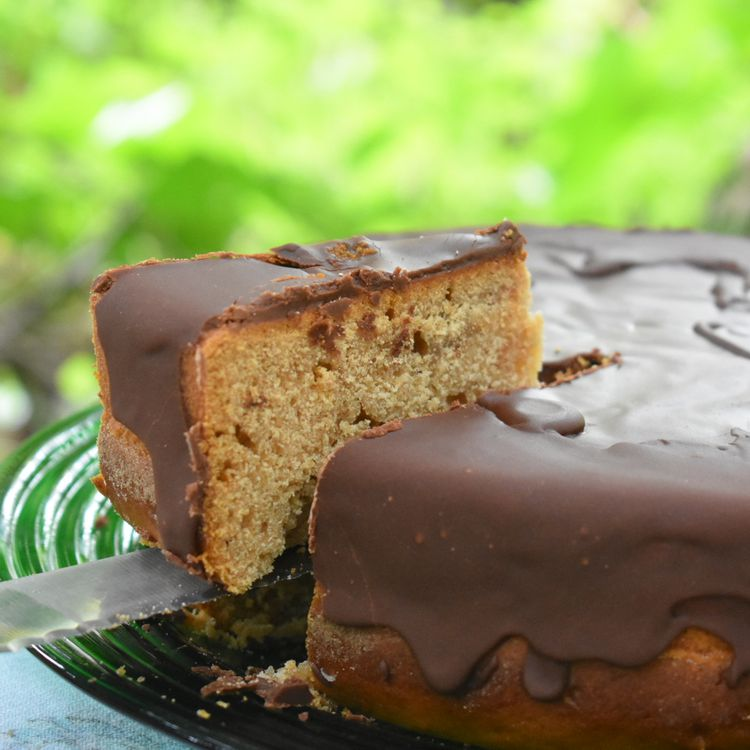

Chocolate-Glazed Honey Cake

Description
This is my mother's traditional honey cake, made every year for the Jewish new year Rosh Hashanah. We eat honey cake in order to have a sweet new year. I love the glaze for this especially - the cake is a little dry. I could eat the glaze with a spoon! Best served with tea.
Ingredients
Cake:
- 4 cups all-purpose flour
- 1 ½ cups white sugar
- 1 cup honey
- 3 large eggs
- ½ cup vegetable oil
- ½ cup brewed coffee
- 1 tablespoon jam (any flavor)
- 1 tablespoon baking powder
- 1 teaspoon ground cinnamon
- ½ teaspoon ground cloves
- ¼ teaspoon baking soda
Chocolate Glaze:
½ cup white sugar
¼ cup unsweetened cocoa powder
3 ½ tablespoons water
1 teaspoon all-purpose flour
½ cup margarine
1 tablespoon brandy
Steps
- Preheat oven to 325 degrees F (165 degrees C). Lightly grease two 8x3-inch loaf pans.
- Mix 4 cups flour, 1 1/2 cups sugar, honey, eggs, oil, coffee, jam, baking powder, cinnamon, cloves, and baking soda together in a bowl until smooth; spread evenly into the prepared loaf pans.
- Bake in the preheated oven until a knife inserted in the center comes out clean, about 1 hour. Remove cake from pans and cool on a wire rack.
- Bake in the preheated oven until a knife inserted in the center comes out clean, about 1 hour. Remove cake from pans and cool on a wire rack.
- Spread glaze over cooled cakes.